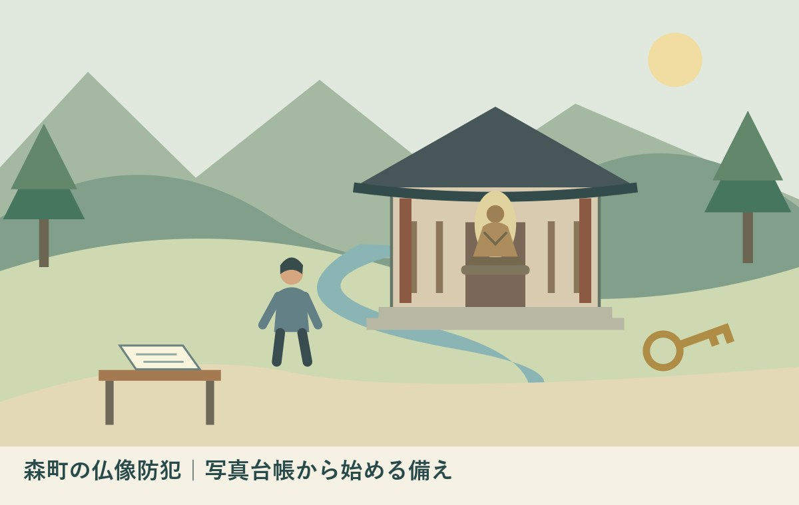

森町の仏像防犯｜写真台帳から始める備え
／ ／ 社寺・文化財・建築

Q：お堂の仏像を引き継ぐとき、何を記録すればよいですか？
A：仏像の防犯台帳には、写真、特徴、寸法、記録日をそろえます。文化庁の通知は見回り、設備点検、関係者との連携も求めています。記録を整えても盗難を防げる保証にはなりません。まず管理者の許可を得て、既存写真一件の撮影日と保管先を確かめてください。
仏像の防犯台帳は、管理を引き継ぐための記録
森町の仏像防犯を考えるとき、最初から新しい設備を買う話だけにしない方がよいと私は考えます。文化庁の通知は、写真、特徴、寸法などの記録と台帳の作成を、防犯の備えの一つに挙げています。手元の記録を確認することから始められます。
地域のお堂や寺院を見守る方は、掃除、鍵の管理、行事の準備などを重ねてきたはずです。その負担へ、記録作りを無制限に足す話にはしたくありません。私は大石浩之（磐田市／不動産業）です。担当者が交代しても使える一件の記録を、今回の小さな目標に置きます。
この記事は、2026年10月21日に確認した文化庁と森町の公式資料に基づきます。文化庁の防犯通知は2010年4月26日付です。本文に記された当時の盗難事例を、2026年の出来事として扱いません。森町で盗難が増えているという統計も、今回確認していません。
私は、台帳は公開用の図鑑ではなく、管理を引き継ぐ道具だと考えます。写真を撮れたからウェブに載せる、という順序にはしません。作品を特定する資料と、広く紹介する資料は、使う目的も共有する相手も違います。まずその線引きを、管理者とそろえます。
文化庁通知が求めるのは、記録だけではない
文化庁「文化財の防犯対策について」は、無人の寺社の文化財の状況確認、定期的な見回り、防犯設備の作動確認、写真等による台帳作成、関係機関との連携という五つの項目を示しています。台帳だけを整えれば備えが終わる、という内容ではありません。
通知でいう台帳は、万一の被害時に文化財を特定できるようにする記録です。文化財の写真に加え、特徴や寸法などを新しい状態で記録するとしています。保管場所を示すだけでなく、どの文化財なのかを説明できる資料が想定されています。
私は、この「特定できる」という目的に、台帳の意外な役割があると思います。作品名が家族や地区で通じても、別の人が同じ物を判別できるとは限りません。何を記すかを迷ったら、事情を知らない相手へ対象を説明できるか、という問いから項目を考えられます。
防犯設備は設置した事実だけでなく、正常に働くかの確認が通知に含まれています。私は、設備の一覧と点検の記録を分けて残す方法を提案します。「ある」と「確かめた」は別です。どちらも記録日を添えることで、次の担当者が確認の続きを引き受けやすくなります。
森町の文化資料を、管理の実務につなぐ
森町公式の「文化財」ページは、建造物のほか、工芸や絵画書跡などの指定文化財も紹介しています。文化財は大きな建物だけではありません。ただし、町の一覧で分かる指定記録と、個々の保管や警備の状況は同じ情報ではありません。
森町公式「図説森町史」の目次には「森町の彫刻」の章があります。町の仏像・神像を調べる際には、公式の資料から名称や由来を確かめる入口になります。一方、一般向けの町史の記述から、現在の管理担当者や鍵の扱いまで分かるとは限りません。
作品を調べるための資料は、森町の仏像・神像を扱う既存記事に整理しています。今回は、美術史の索引を増やすのではなく、管理を引き継ぐ記録の作り方に焦点を絞ります。どちらの資料を作っているかを、表紙に書き分けると扱いやすくなります。
私は、地区に同じ名前で呼ばれる像があっても、推測で一つにまとめない方がよいと考えます。正式名称を確認できない場合は「呼称は確認中」と記します。写真の整理番号など、管理者の間で対象を区別できる方法を決めてから、名称の調査へ進みます。
写真台帳に書く項目を、少なく明確にする
仏像の写真台帳は、対象の呼び名、写真の撮影日、分かっている特徴、既存の寸法記録、記録を確認した人から始められます。これは文化庁通知の目的を踏まえた私の整理案です。全国共通の指定様式や、提出が義務づけられた用紙を紹介しているわけではありません。
最初に、管理者がすでに持っている写真を探します。正面の写真があるか、全体が分かるか、撮影時期が分かるかを確認します。すぐ撮り直すことを前提にしなくても構いません。日付不明なら日付不明と記録し、確認できることだけを先にそろえます。
寸法は、過去の調査資料や既存台帳の値を出典付きで写す方法があります。台座を含む高さなのか、像そのものの高さなのかなど、測り方が違えば数字の意味も変わります。数値だけを切り取らず、どの資料のどの項目かを一緒に残してください。
私は、新しい測定のために像を持ち上げたり、台座から外したりすることを勧めません。扱い方を誤れば損傷につながりかねないからです。必要な撮影や測定の方法は、所有者・管理者と専門家へ確認します。記録を増やすために対象を危険にさらす順序にはしません。
良い点｜一件の記録なら、引継ぎの入口を作れる
写真台帳の良い点は、管理する人の記憶だけに頼る範囲を減らせることです。すべての作品を一度に調べ直さなくても、既存の写真一件と資料の所在を結び付ければ、次の担当者が探す手掛かりを作れます。小さく始められる点を私は評価します。
地域の文化を守ってきた方の知識を、単に古い情報として扱うべきではありません。呼び名、修理の時期、資料を持っている人。その知識を聞いて記録するときも、相手の手間を考え、質問を絞ります。一度で全部を聞き出す計画にしない方が続けやすいと考えます。
写真と寸法などの記録を用意する考え方は、防犯通知の本文に明示されています。作品の記録作りが、防犯と関係のない趣味の作業ではないと分かります。ただし、記録の有無だけで盗難の危険度や被害の結果を判断できるわけではありません。
私は、台帳を更新した日が分かると、引継ぎの会話も具体的になると思います。「前から知っている」ではなく、「この写真は何年に、誰が確認したか」を話せるからです。分からない箇所が残っていても、次に確かめる内容が一つ決まれば、記録は働き始めます。
注文したい点｜作る人の負担と、共有範囲も決めたい
台帳の整備を勧めるなら、作成後に誰が保管し、誰が更新するかも決めたいと私は考えます。写真を撮る人へ仕事が集中し、異動や世代交代で資料に入れなくなる形では、記録が残っても管理を引き継げません。作成と継続は一組の仕事です。
私は、詳しい記録ほど広く出すべきだとは考えません。鍵、警備、立入りの条件などは、必要な関係者の間で管理する情報です。文化財の価値を紹介する公開資料と、防犯に使う内部資料は、同じファイルにまとめず、分けて保管する方が扱いやすいと思います。
どこまで情報を伏せれば関係者が困らず、どこまで共有すれば運用できるか、私にも一律の答えはありません。管理体制や保存場所で事情が違うからです。この記事は、公開範囲の設定を勝手に決めず、管理者の合意を先に置くという順番を提案しています。
写真や情報の提供を受ける場合は、その目的と共有相手を伝えます。後から広報に使いたくなっても、当初の承諾を広げて解釈しません。地域の協力を長く続けるには、頼んだ範囲を守ることが先だと私は考えます。作業の便利さだけで、資料の扱いを変えないようにしたいのです。
見回り・設備・連絡先は、別の欄で引き継ぐ
仏像の防犯台帳と合わせて、見回りや設備点検の記録を管理します。文化庁通知は、所有者、地方公共団体、所轄警察署等の連携も挙げています。作品の記録と、日々の運用を示す記録の両方を用意する考え方です。
私は、見回りを頼むとき、ただ「時々見てほしい」で済ませない方がよいと考えます。確認する範囲と、異変を見つけた際の連絡先を、管理者側で決めます。この記事で特定のお堂の巡回経路や時間を公開することはしません。実際の運用は当事者間で調整する内容です。
点検の方法が分からない設備は、詳しい人や設置した事業者へ確認します。担当者が交代したからといって、説明書のない機器を自己判断で設定変更することは勧めません。作動確認の方法と、連絡する相手が分かる状態を、引継ぎの目標に置きたいところです。
文化財を守る備えには火災への対応もあります。文化財防火の記事は別の確認項目として参照できます。防火と防犯を同じ点検済みの印で済ませず、何を確認したのかを分けると、未確認の仕事が隠れにくくなります。
対案・結論｜今日、既存写真一件の所在を確認する
仏像の防犯で今日できる小さな一歩は、管理者の許可を得て、既存写真一件の保管先と撮影日を確かめることです。写真を一般公開する必要はありません。手元の写真と対象が結び付くか、次の担当者が探せるかを確認します。
私は、最初の作業で空欄を全部埋めることを求めません。正式名称、寸法、撮影年が分からなければ、確認中と書きます。分かっている項目を残してから、どの資料や誰の知識に当たるかを決めます。推測で整った表を作るより、未確認が見える表の方が相談に使えます。
記録した内容は、管理者に一度見てもらいます。対象の取り違え、古い呼び名、別の像の写真などが混ざっていないかを確認するためです。私は、作った人だけで完成と決めるより、実際に管理する人と照合する工程を置きたいと考えます。
修復に関心がある場合は、文化財修復助成の記事へ分けて進みます。修復費の相談と、防犯台帳の整備は同じ申請ではありません。どの困りごとを先に相談するかを決めて、資料を一緒に持っていくと整理しやすくなります。
次の担当者へ渡すのは、原本とコピーの所在
写真台帳の引継ぎでは、原本、共有用の写し、保存先を区別します。紙で残す場合もデータで残す場合も、どれが新しい版か分かるようにします。作品の写真と、設備や連絡先を記した内部情報の閲覧範囲も、引継ぎ時に確かめてください。
私は、個人のスマートフォンにしか写真がない状態を、引継ぎ完了とは考えません。端末を買い替えたり担当者が変わったりした後にも、必要な人が資料を見られるかを確かめたいからです。ただし、どの保存方法が合うかは、その地域や管理者の運用で決める内容です。
紙の資料は、整理番号と保管先を記すだけでも探しやすくできます。データはファイル名に対象と記録日を入れる方法があります。私は、全員が使えない複雑な仕組みを先に作るより、次の担当者が実際に開ける方法から始める方が、管理の継続に合うと考えます。
退任する人の連絡先を残せば済む、という形にも頼りすぎないようにします。質問のたびに前任者へ戻らなければ進まない状態は、その方の負担を終わらせません。何が資料で確認でき、何が未確認かを一緒に渡すことが、次の人を支える方法になります。
大石の視点｜鍵の引継ぎだけで管理は終わらない
私は、仏像やお堂の管理を、鍵を渡しただけで引き継いだことにしない方がよいと考えます。何を守っているのか、どの記録があるのか、困ったら誰へつなぐのか。その三つが分かると、次の担当者は自分で抱える範囲を見失いにくくなります。
不動産業の立場から私は、家族が鍵と古い写真を前にして、保管先を一枚の紙へ書き出す場面を考えます。写真の内容を知らない家族にも、対象と記録日が分かる形にする。これは実際のお堂の管理相談を再現した体験談ではなく、私が引継ぎに必要だと考える順序です。
防犯の準備は、誰かを疑うためではありません。守る仕事を続けてきた方の努力が、担当交代で途切れないようにするためです。私は、地域の担い手へ新しい仕事を増やす前に、すでにある資料を一件探すところから始めたいと思います。
記録だけで盗難を防げるとは言いません。見回り、設備の確認、関係者との連携も続ける必要があります。それでも、対象を説明できる一件の資料は、管理の引継ぎを具体化します。今日できるのは、写真を増やすことより、今ある写真を次の人が使えるか確かめることです。
FAQ｜仏像の写真台帳と防犯
台帳の写真はウェブ公開しますか？
防犯台帳は、文化財を特定し、管理を引き継ぐための記録です。写真をウェブ公開することを前提にはしません。所有者・管理者と共有相手を決め、保管場所や警備の情報は必要な範囲で管理してください。文化財を紹介する公開資料へ転用する場合は、その目的に合う承諾を別に確認します。
仏像を動かして撮影してもよいですか？
記録のためでも、仏像を自己判断で持ち上げたり、台座から外したりすることは勧めません。既存の写真や調査記録を先に探し、新しい撮影・測定の必要性と方法は所有者・管理者や専門家へ確認してください。寸法が不明なら空欄や確認中とし、推測で数値を埋めないでください。
台帳があれば防犯設備は不要ですか？
台帳は防犯の備えの一つであり、設備や見回りの代わりにはなりません。文化庁の2010年通知は、定期的な見回り、防犯設備の作動確認、写真等の記録、関係機関との連携を挙げています。設置済みの設備も動くかを確認し、点検方法や異変時の連絡先を担当者間で引き継いでください。
公式情報源
2026年10月確認（本文・リンク確認日：2026年10月21日）
- 文化庁：文化財の防犯対策について（2010年4月26日通知）（2026年10月確認）
- 森町：文化財（過去の指定記録を含む）（2026年10月確認）
- 森町：図説森町史目次（2026年10月確認）
- 文化庁：文化財保護強調週間（2026年10月確認）
制度、案内、数値、受付条件は変わることがあります。行動前に公式の最新情報を確認してください。個別の文化財、建物、契約、税務等の判断は、所有者・管理者、担当窓口、適切な専門家へ相談してください。